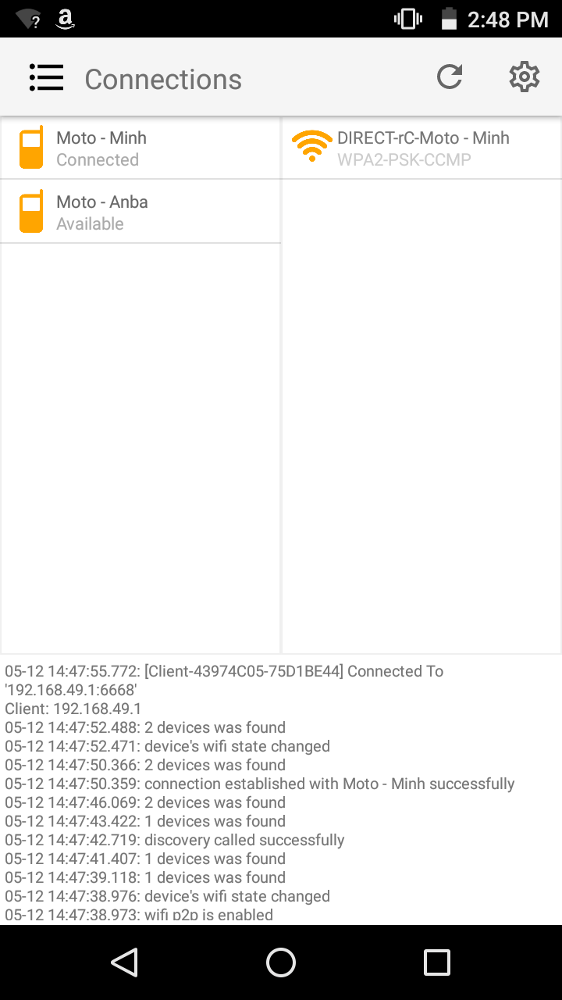
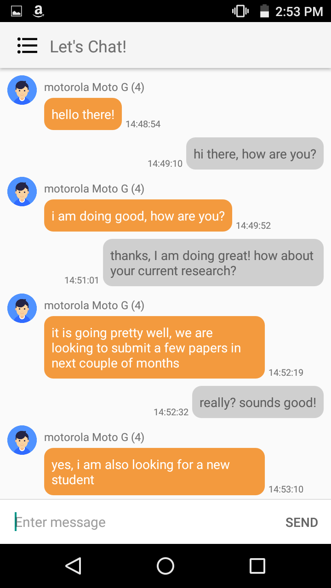

Android RMI Application
Intro
This application based on my Android RMI research.
The observation system uses a camera to detect movements and light changes in our office.
If an event happens, the system will analyze in detail the motion and save it into the database with an evident.
User with permission can retrieve the evident by clicking on the corresponding event on the right panel.
Design
In this project, I used ROS platform for video streaming from the camera to the third party application.
I made the Monitor App which subscribes to the video stream of the ROS system, this app uses OpenCV to process every single frame to detect motions.

The image process comprises:
- Step 1: turning the image into grayscale
- Step 2: subtracting two consecutive images to find the differences
- Step 3: detect and draw contours of the difference areas

For the accessibility of mobile and web apps to the File Server and events in the database, I designed a REST Service hosted on Tomcat server, this web service provides basic functionality for listing and deleting events, as well as retrieving evident imageries. I also developed a Video Streaming topic to enable video streaming to the web and mobile apps. The video stream is available in the form of URL so that developer can easily embed in an IMG tag.
Regarding web front-end, it is built using JQuery to implement interactive interface. On Android platform, I used ROS For Android library to be capable of connecting to the ROS system.